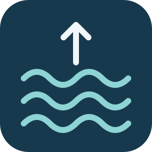

Tide Watch 2Local water-level observations and estimated future turns
Waiting for location
Measured depth
Change per hour
Last observed range
Location & sensor details
Depth history
Main line: 3-hour smoothed depth · Show measurements: original readings and recorded high/low markers · H/L labels: original next-turn estimates
The selected smoothing window shows the broader trend; recent values may adjust as readings arrive. Gaps show interrupted observations. Future depth is not predicted. Times are local to this device.
Estimated next changes
| Turn | Estimated time | Prediction basis |
|---|
Times use repeated local observations. Prediction notes describe observed variation and sampling; prediction accuracy has not been calibrated.
Observed turning points
| Turn | Observed time | Depth |
|---|